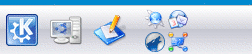

Kontrollleiste
Archivierte Anleitung
Dieser Artikel wurde archiviert, da er - oder Teile daraus - nur noch unter einer älteren Ubuntu-Version nutzbar ist. Diese Anleitung wird vom Wiki-Team weder auf Richtigkeit überprüft noch anderweitig gepflegt. Zusätzlich wurde der Artikel für weitere Änderungen gesperrt.
Die Kontrollleiste in KDE 3 ist der sog. "Kicker". Er kann frei nach den eigenen Bedürfnissen angepasst und durch sog. Applets erweitert werden. Interessante Erweiterungen für die Kontrollleiste werden in dem Artikel KDE Plugins aufgelistet.
Icons¶
 Die Handhabung mit Icons im Kicker gestaltet sich einfach: Vorhandene Icons können über das Kontextmenü, welches durch einen "Rechtsklick" auf das entsprechende Icon erscheint, verschoben, entfernt oder konfiguriert werden (beispielsweise wenn man dem Icon ein anderes Symbol zuweisen möchte). Möchte man ein neues Icon dem Kicker hinzufügen so klickt man mit der rechten Maustaste auf eine freie Fläche -> "Programm hinzufügen" und wählt das gewünschte Programm aus. Möchte man ein Programm hinzufügen, das keinen Eintrag im Menüeditor hat, muss "Nicht-KDE-Programm hinzufügen" ausgewählt werden. Es erscheint ein neues Fenster, in dem man den Befehl für das Programm, das gewünschte Symbol und eine kurze Beschreibung angeben kann.
Applets¶
Applets sind Programme, die dem Kicker neue Funktionen hinzufügen. Dazu gehören neben exotischeren Dingen wie dem Kirocker auch Grundfunktionen wie die Fensterleiste, auf der die laufenden Programme aufgelistet werden oder der Systemabschnitt der Kontrollleiste, durch die Programme nicht direkt im Vordergrund laufen, aber immer schnell zur Hand sind, beispielsweise Instant Messenger wie Kopete.
Applets hinzufügen¶
Um ein Applet zu aktivieren, klickt man mit der rechten Maustaste auf eine freie Fläche und wählt "Miniprogramm hinzufügen". Es öffnet sich ein neues Fenster, in dem alle installierten Applets mit einer kurzen Beschreibung aufgelistet werden. Durch einen Doppelklick auf das gewünschte Applet oder mit einem einfachen Klick und einem weiteren auf die Schaltfläche "Hinzufügen" wird es in den Kicker geladen.
Applets konfigurieren/entfernen¶
Wenn man mit dem Mauszeiger über ein Applet geht, erscheint in der Regel am linken äußeren Rand des Applets eine kleine Leiste mit einem Pfeil. Mit einem Klick auf diesen Pfeil erscheint ein Kontextmenü, über das man das Applet verschieben, entfernen und ggf. konfigurieren kann. Die Ausnahme bilden Applets, die als Icon im Kicker auftauchen, beispielsweise das K- oder das System-Menü. Diese werden, wie andere Icons auch, über das entsprechende Kontextmenü konfiguriert, das bei einem einfachen "Rechtsklick" erscheint.
Kicker konfigurieren¶
Mit einem "Rechtsklick" auf einer freien Fläche kann man über den Punkt "Kontrollleiste einrichten" den Kicker konfigurieren:
| Kontrollleiste einrichten | |
| Menüpunkt | Einstellungsmöglichkeiten |
| "Layout" | Hier kann man die Größe und die Position des Kickers einstellen. |
| "Ausblenden" | Hier kann eingestellt werden, ob und wie der Kicker ausgeblendet werden soll. |
| "Menüs" | Hier können zusätzliche Einstellungen für das K-Menü vorgenommen werden. |
| "Erscheinungsbild" | Hier können zusätzliche Effekte und das Erscheinungsbild des Kickers eingestellt werden. |
| "Fensterleiste" | Hier können zusätzliche Einstellungen für die Fensterleiste vorgenommen werden. |
Kontrollleisten-Erweiterungen¶
Mit Kontrollleisten-Erweiterungen sind keine Applets gemeint, da sie im Gegensatz zu diesen nicht im Kicker sind, sondern außerhalb davon, beispielsweise als zweite Kontrollleiste oder externe Fensterleiste. Sie können mit einem "Rechtsklick" auf eine freie Fläche über "Kontrollleisten-Erweiterung hinzufügen" ausgewählt und über "Kontrollleisten-Erweiterung entfernen" beendet werden.
Links¶
kde-apps.org
 und kde-look.org - Hier findet man zusätzliche Applets und Hintergründe für den Kicker
und kde-look.org - Hier findet man zusätzliche Applets und Hintergründe für den Kicker
- Erstellt mit Inyoka
-
 2004 – 2017 ubuntuusers.de • Einige Rechte vorbehalten
2004 – 2017 ubuntuusers.de • Einige Rechte vorbehalten
Lizenz • Kontakt • Datenschutz • Impressum • Serverstatus -
Serverhousing gespendet von